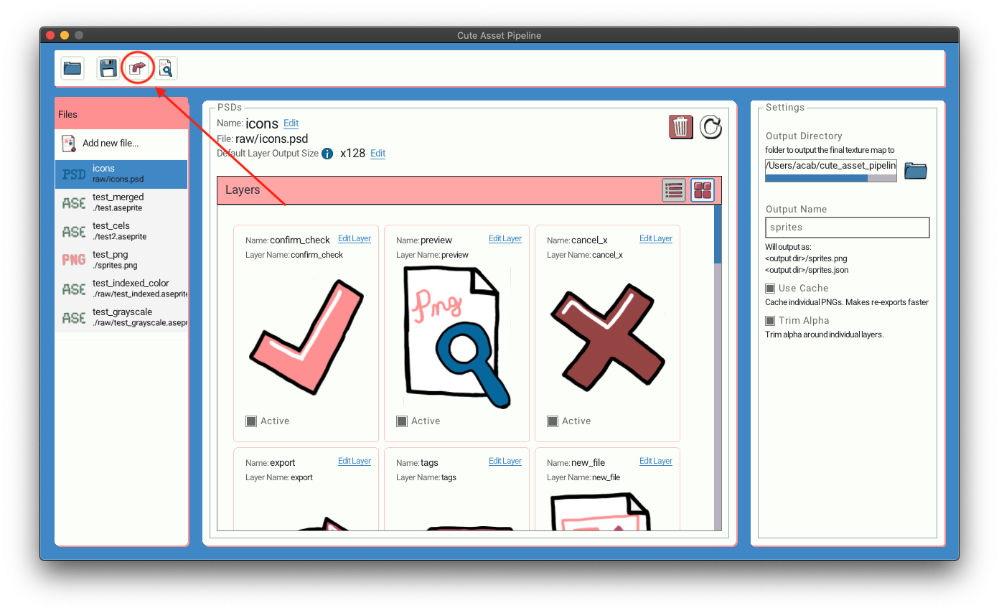
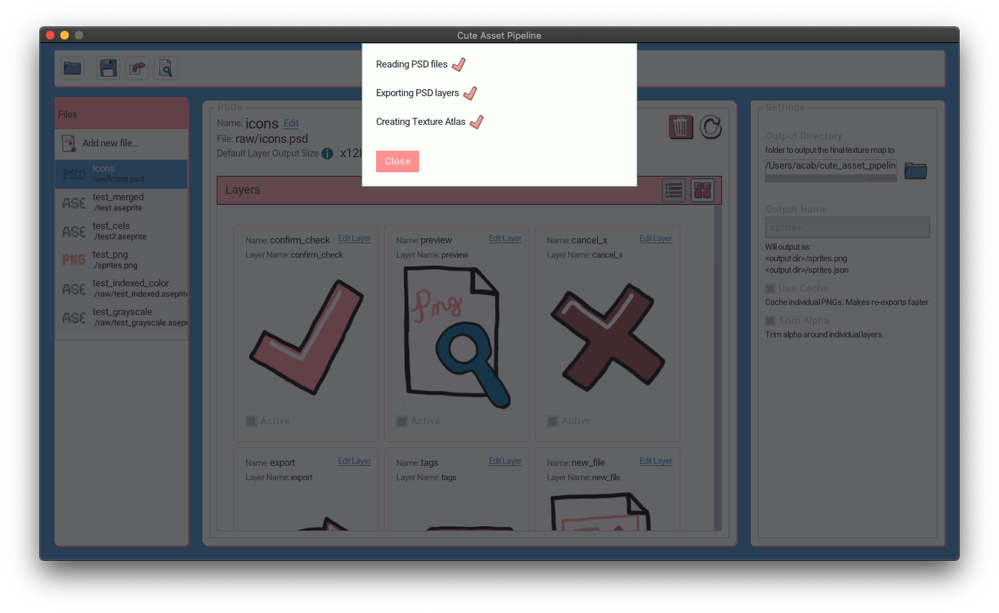

Exporting Your Project #
At some point you’ll want to actually export your project to a texture atlas. Just hit the export button in the top menu.
Cute Exporter also has a CLI that you can use to export your images from the command line.

This will bring up a modal that will show you the progress of the export.

The exported files #
By default the exported files will be saved to the same folder your project file is in. By default the files will be names assets.png and assets.json.
You can manage all of these properties in the settings.
The exported png file should now contain all the layers in your project. The exported JSON will contain info about each exported layer and animations.
JSON data file #
The overall format of the JSON file will be something like this:
{
"assets": [
{
"id": "1",
"name": "folder",
"parentPath": "raw/icons.psd",
"width": 173,
"height": 128,
"x": 899,
"y": 610,
"layerPos": {
"x": 0,
"y": 0
},
"tags": [],
"animationName": "",
"animationId": 0,
"frameNumber": -1
}],
"animations": [
{
"name": "walk",
"id": 10,
"frames": [
29,30
],
"totalFrames": 2
},
],
"image": "sprites.png"
}
Assets section #
The assets section is an array of each layer from each file in your project.
id #
Unique id for each layer that is consistent across runs of the exporter. You can feel free to reference this id in your game engine of choice.
name #
The name you gave the layer in the Gui.
parentPath #
The relative path of the parent raw asset in the project.
width, height #
Width and height of the layer in the PNG atlas
x,y #
The x and y pixel coordinate of the top left corner of the layer in the PNG atlas.
layerPos #
The original position of this layer/cel in the parent asset. If you decide to trim alpha around your layer this can help you place it again relative to siblings.
If you are exporting Aseprite files this setting can be useful in lining up the head with the body etc in an asset.
tags #
User defined tags for the layer.
animationName #
The animation this layer belongs to. If any.
animationId #
The id of the animation this layer belongs to. If any.
frameNumber #
The frame number of this layer in the animation. -1 if the layer does not belong to any animation.
Animations #
Cute Exporter supports exporting info about animations. Currently it only exports info about frames in Aseprite files. This process is automatic.
name #
The name of the animation. Taken from the tag name in Aseprite.
id #
The id of the animation.
Because of the way Aseprite animations are automatically exported this id is not necessarily consistent across runs of the exporter but should be mostly reliable. The id is based off of the parent asset id and the index of the tag in the Aseprite file. If you don’t change the order of your tags this id should remain reliable.
frames #
The ids of the layers in this animation.
If multiple layers belong to the same frame it will be a multidimensional array with each sub array containing all the layers for that frame.
manyAssetsPerFrame #
Set to true if there are multiple layers that belong to each frame in this animation.
totalFrames #
Total number of frames in this animation.